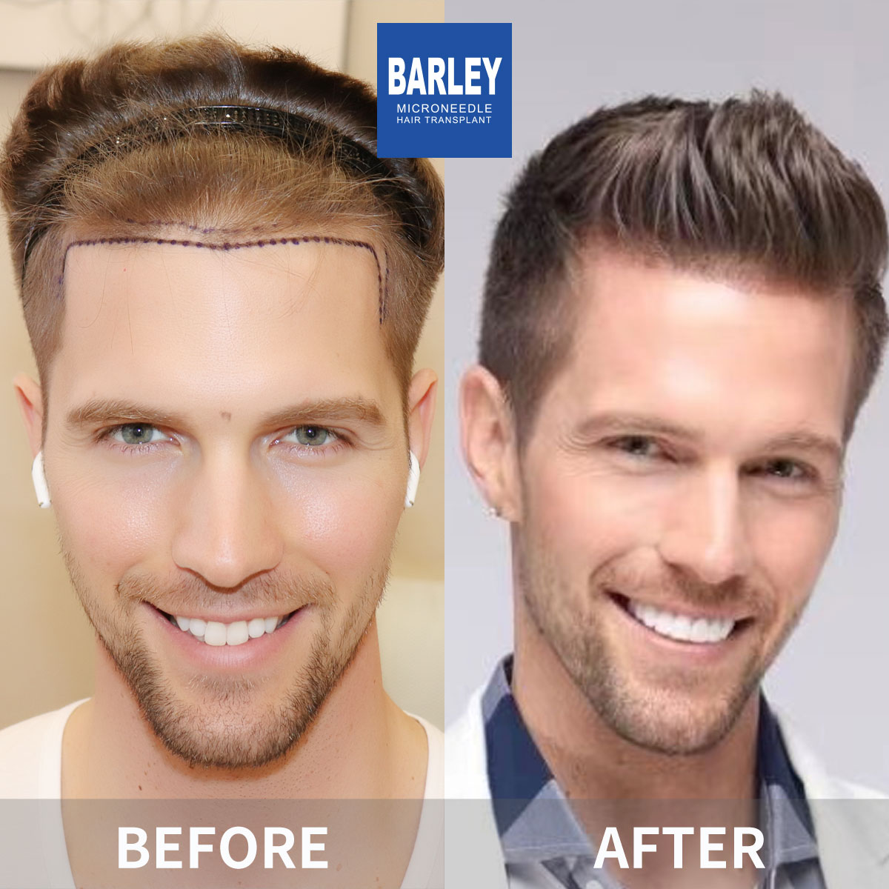

At Barley Hair Transplant Hospital, we're at the forefront of advanced hair restoration solutions. As the original innovators of microneedle transplant technology and no-shave procedures, we've set new benchmarks for quality and patient care in the industry.
For more than 18 years, we've been the trusted choice in major cities across China, performing more hair restoration procedures than any other clinic. Our ongoing commitment to innovation continues to shape the future of hair health treatment worldwide.
State-of-the-art clinics
Exclusive patents
Years of expertise
Satisfied global patients
Personalized treatments tailored to your unique hair restoration goals
Artistic hairline design and transplant for natural-looking, age-appropriate results customized to your facial features.
Add volume to thinning areas using our precise microneedle implantation technique for fuller, thicker-looking hair.
Complete coverage solutions for crown and vertex baldness with naturally distributed hair density.
Beautiful eyebrow restoration with precise placement that follows your natural growth patterns.
Design the perfect beard or mustache through artistic follicle placement tailored to your personal style.
Restore or enhance sideburns for a polished, masculine facial appearance.
Body hair transplantation for the chest and other areas in need of enhancement.
Comprehensive treatment solutions for various types of hair loss conditions.
Professional aftercare and maintenance treatments to support and preserve your hair health.
Our innovative microneedle implant pen uses precision-engineered tools to place individual hair follicles directly into the scalp with exceptional accuracy. The pen's exclusive 360rotation ensures perfect alignment with your natural hair growth direction, minimizing tissue trauma and discomfort while maximizing follicle survival rates.
Discover what makes us China's premier hair restoration clinic
Pioneers in microneedle hair transplant technology since we began in 2006
Conveniently located in major Chinese cities, all delivering the same exceptional quality
Advanced microneedle and implant pen technologies for exceptional results
Trusted worldwide for transformative hair restoration experiences
Comprehensive English assistance to support international patients throughout their journey
Modern facilities and rigorous protocols ensure your safety and comfort
See the outstanding hair restoration results our patients have achieved



Authentic moments with our happy, successful patients

Celebrating their amazing results with our care team

Patient proudly showing off their fantastic new hairline

Joyful patient sharing their fantastic experience

Patient celebrating with our expert medical team

Thankful patient following their successful transplant

Thrilled patient showcasing their hair restoration results

Patient overjoyed with their transformation results

Happy patient eager to begin their new chapter
Genuine stories from our grateful patients around the world
"Honestly, the whole experience exceeded every expectation I had. From the first WhatsApp message to my final follow-up photo check, everything felt organized and professional. The clinic itself is modern and spotless, and the translator assigned to me was so patient with all my questions. I'm at month 8 now and the density is exactly what we discussed."
"Walking into the Beijing clinic for the first time, I was blown away by how welcoming everyone was. The reception area feels like a five-star hotel, not a medical facility. My coordinator greeted me by name and walked me through every step of the day. I left feeling confident instead of anxious — that's rare for any medical visit."
"What stuck with me was how thorough each stage was. The video consultation lasted nearly an hour — they didn't rush anything. Then on procedure day, the surgeon drew the hairline with me three times until we both agreed it was perfect. Post-op, the nurse messaged me every single day for two weeks just to check in. That level of care doesn't exist everywhere."
"Traveling abroad for surgery sounds intimidating, but Barley's team made it feel like a vacation with a doctor's appointment in the middle. They booked my hotel, sent a driver to the airport, and even gave me a list of nearby restaurants with English menus. I recovered in three days then spent the weekend exploring Guangzhou. Would do it again in a heartbeat."
"Once I got home to Dubai, I figured that would be the end of the communication — but no. They scheduled video calls at month 1, 3, and 6. My coordinator still replies to my random questions within an hour. I sent them a photo last week asking about some shedding and the surgeon got back to me with a detailed explanation the same day. The follow-up is unreal."
"I'm not going to lie — price was the main reason I considered China. But after comparing quotes from three clinics in Istanbul and two in Bangkok, Barley came in cheaper AND offered better tech. I thought I'd be compromising on something, but I didn't. The results are better than any before-and-after I saw at the other clinics. Sometimes the better deal is actually the better quality."
Our straightforward three-step process makes your hair restoration journey smooth, pleasant, and perfectly tailored to your goals.
Speak with our specialists for a relaxed evaluation of your hair loss condition and available treatments.
We'll detail the optimal approach, clear pricing, and timeline designed just for you.
We'll arrange your pickup from the airport or station and ensure your stay is comfortable throughout.
Experience our modern and comfortable facilities

Our state-of-the-art facility

Relax in our premium lounge

Sterile and advanced

Private and professional

Comfortable post-op space

Welcoming entrance
Common questions about the procedure, recovery, and results
Click to copy contact information
15810155700
+86 13730143529
hairtransplant@qq.com

Everyone's hair loss journey and solution are unique due to a variety of factors. Our hair restoration experts will assist you in determining the root cause and the best solution for your hair restoration plan. If you have any questions, please ask; we are happy to assist.